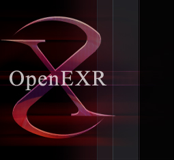

|  | |||||||||||||||||||||
|
|||||||||||||||||||||
| About OpenEXR | |||||||||
|
Show Me ...The following pictures show the same OpenEXR image; yet
the amount of detail you can see when comparing the three is
substantially different. The view out the window is obscured
by the bright sunlight, although there is, in fact, a
building next door with a rust-colored roof; the sky is
blue, and there are even power lines visible above the
building. Using the Viewer, you can adjust the amount of
exposure on the fly to see more details emerge, as the
followin images show.
HistoryILM developed the OpenEXR format in response to the demand for higher color fidelity in the visual effects industry. When the project began in 2000, ILM evaluated existing file formats, but rejected them for various reasons:
FeaturesILM decided to develop a new HDR file format with 16-bit floating-point color component values. Since the IEEE-754 floating-point specification does not define a 16-bit format, ILM created the "half" format. Half values have 1 sign bit, 5 exponent bits, and 10 mantissa bits. For linea images, this format provides 1024 (210) values per color component per f-stop, and 30 f-stops (25 - 2), with an additional 10 f-stops with reduced precision at the low end (denormals). The half format supports denormalized numbers, positive and negative infinities, and NaNs. It is identical to the half data type in NVIDIA's Cg graphics language, allowing a developer to process values from an OpenEXR image directly on current NVIDIA GPUs such as the GeForce FX family. In addition to the half data type, OpenEXR supports 32-bit unsigned integer and 32-bit floating-point data types. OpenEX images can have an arbitrary number of channels, each with a different data type. The current release of OpenEXR supports several lossless compression methods, some of which can achieve compression ratios of about 2:1 for images with film grain. OpenEXR is extensible, so developers can easily add new compression methods (lossless or lossy). OpenEX images can be annotated with an arbitrary number of attributes, e.g., with color balance information from a camera. OpenEX images are able to support stereoscopic workflows; version 1.7.0 has support for multiple views resident in the image files. OpenEXR v2 introduces support for storing "Deep Data" buffers wherein pixels are capable of holding variable number of data samples, particularly as pertaining to depth. The implementation is capable of both hard surface and volumetric representation requirements for deep compositing workflows. OpenEXR v2 also introduces the concept of "Multi-Part" files that contain a number of separate, but related images in one file. Access to any part is independent of the others. Please see the documentation pages for further detail. © Copyright OpenEXR a Series of LF Projects, LLC and/or its contributors. All documentation on this website made available under a Creative Commons Attribution 4.0 International License.
|